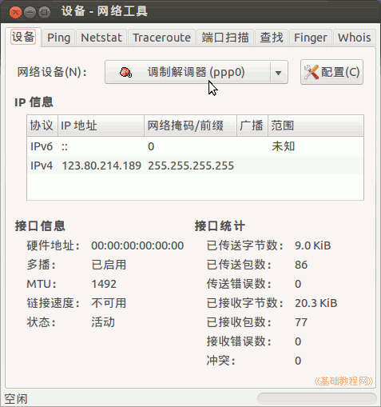
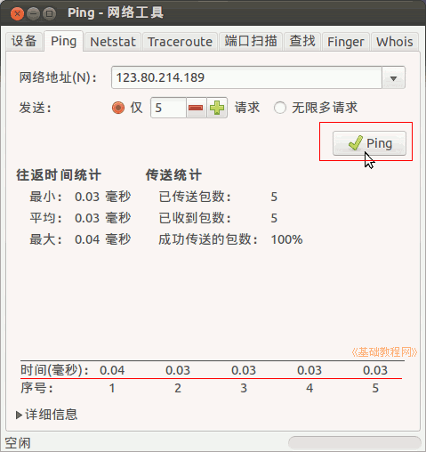
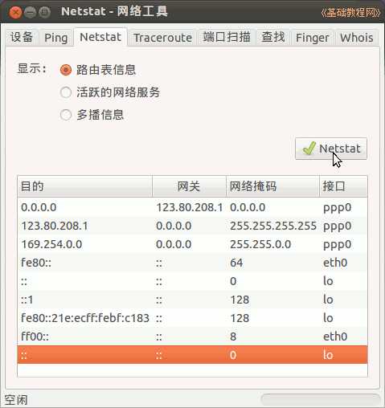
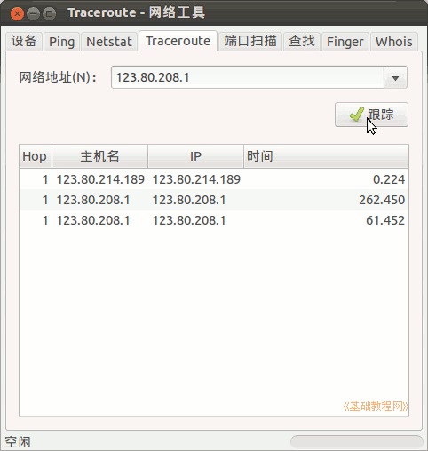
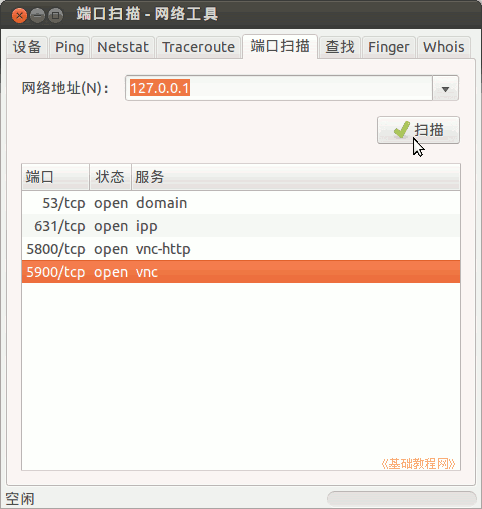
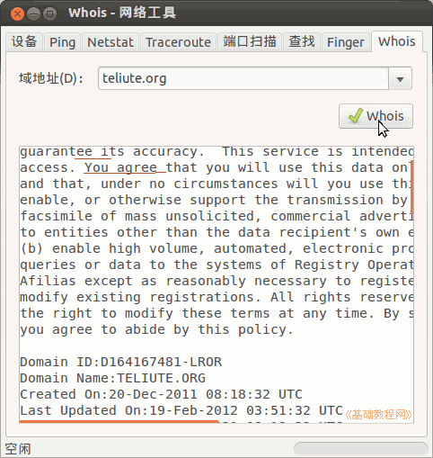

Ubuntu 入门操作指南
作者：TeliuTe 来源：基础教程网
六十一、网络工具 返回目录 下一课网络工具中包含“设备、Ping、网络统计、路由跟踪、端口扫描、查找、finger、whois”等工具；
1、网络工具
1）点击主按钮，在搜索中输入 nettool ，打开程序，或者依次点“主按钮、所有程序、过滤结果、系统、网络工具”；

2）在设备中可以查看各个网络接口的信息，点 ping 标签可以检测网络是否通畅；

3）在“网络统计”Netstat 中，可以查看路由表信息、正在使用的网络信息、多播信息；

4）在路由跟踪(Traceroute)里，可以查看到一个ip地址经过的路由时间；

5）端口扫描可以查看主机开放的端口，可以查看一下自己的机子；

6）whois 可以查询域名或ip地址的所属，其他的可以自己试试；

本节学习了网络工具的基础知识，如果你成功地完成了练习，请继续学习下一课内容；
本教程由86团学校TeliuTe制作|著作权所有
基础教程网：http://teliute.org/
美丽的校园……
转载和引用本站内容，请保留作者和本站链接。